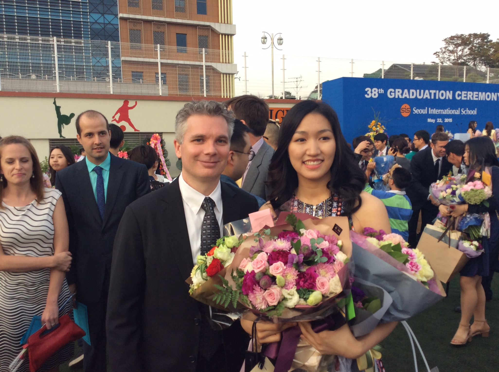
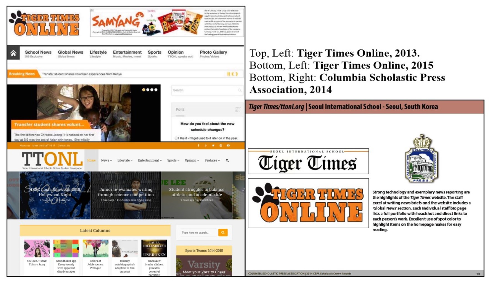
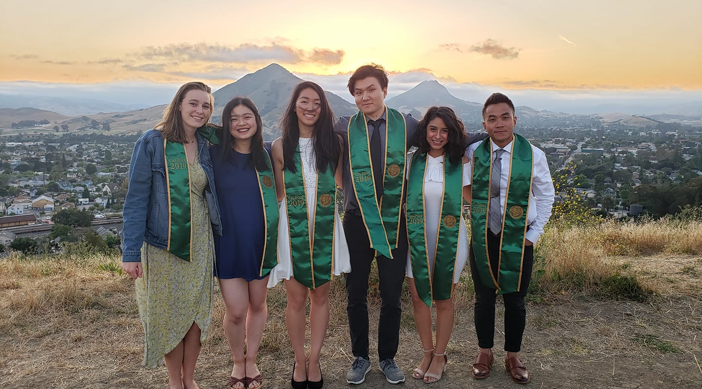

High School (2011-2015)

- Newspaper
- I created Tiger Times Online (ttonl.org), the website version of our
awardwinning
print paper, Tiger Times. I was the editor-in-chief between 2013-2015.
- ttonl.org was built on Wordpress, where I would very occasionally use HTML to manually fix
some formatting issues and create special layouts for feature coverages (like this one!).
- We got our first award in its debut year! Gave up a lot of sleep that year, but I was pretty
proud of our website team!

- Global Issues Network
- GIN was a global issues education and awareness club.
- I helped organize fundraisers, marketing campaigns, education/awareness programs.
- I got to explore my interests in the environment through GIN.
- I started a "Green Initiative Program," designed to promote environmentally conscious
habits using data (i.e. energy usage of lights and technology). It was a small first step
towards my career interests in the environmental/sustainability field!
College (2015 - 2020)

- Cal Poly Part 1 - Undergrad!
- Environmental Engineering
- Definition: Engineering field associated with maintaining our environmental resources
(i.e.
air, water, soil).
- I am also a licensed engineer-in-training.
- Working in Sustainability
- I worked as a technical intern for the Cal Poly Facilities Department. I created utility
dashboards and communicated my data analyses to students and staff.
- Cal Poly Part 2 - Graduate School!

- For my master's degree, I did research on biological treatment methods for dairy
wastewater.
You
can read my thesis here.
- It was through my master's thesis where I got more comfortable around working with data.
Post-Grad (September 2020 - Now)
- After my thesis, I began job searching (...during the pandemic!).
- When I wasn't job searching (and living life), I found time to explore
my interests in data analysis.
- I began watching Youtube videos of data scientists, worked on some python projects with the help
of my brother and at some point, began searching for bootcamps.
- I also began working as a part-time data analyst for my former research advisor.
- Through this coding bootcamp, I hope to gain the technical skills that can help me build my own
portfolio, where I can showcase myself and my work in data!
In the long run, I hope to make sustainability more accessible for organizations that impact
people's lives.